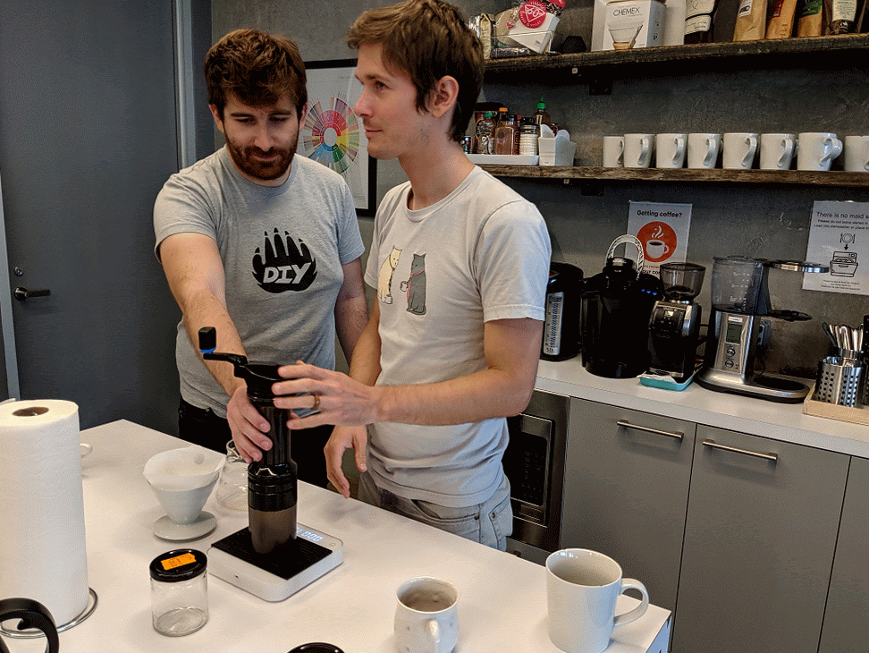
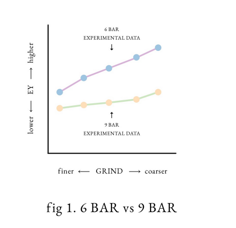
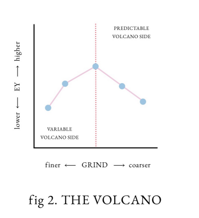
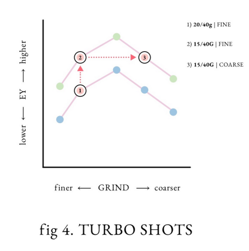

Turbo shot espresso: Need for speed
October 30th, 2023
Bellevue, WA
I'm not great at latte art
Espresso standards
Since the beginning of my coffee journey, I've generally stuck to the concept of a standardized description of an espresso shot. Such as the definition from the Specialty coffee association ..
“.. as historically defined by the Specialty Coffee Association, an espresso is a 25 ― 35 mL (ca. 20 ― 30 g) beverage prepared from 7 ― 9 g of ground coffee made with water heated to 92°C ― 95°C, forced through the granular bed under 9 ― 10 bar of static water pressure and a total flow time of 20 ― 30 s.”
― Cameron, Michael I., et al. “Systematically improving espresso: insights from mathematical modeling and experiment.” Matter (2020), pp. 631 ― 48.
Another source: The Italian Espresso National Institute has specific criteria on what they consider an “Certified Italian espresso”
| Parameter | Values |
|---|---|
| Portion of ground coffee | 7 ± 0.5g (0.25 ± 0.02oz) |
| Exit temperature of water | 88 ± 2°C (194 ± 4°F) |
| Temperature in cup | 67°C ± 3°C (153°F ± 5°F) |
| Entry water pressure | 9 ± 1 bar (131 ± 15 psi) |
| Percolation time | 25 ± 5 second |
| Volume in cup | 25 ± 2.5 ml (0.85 ± 0.08 fl oz) |
How I make espresso
The reason being that I needed somewhere to start to understand and build consistent coffee. I wanted to replicate the same flavors and compositions as some of the espresso drinks that I've had at coffeeshops. When first opening the packaging on my very own home espresso machine; a Gaggia prosumer single boiler, it was very different from some of the Breville automatics which would automate whether you wanted a single or double shot. It was up to you how much coffee to put in, how fine to grind it, and when to start and end the shot. The possiblities were endless.
With that in mind, I quickly found a formula for standard espresso to follow. Other than dialing in the grind size for the specific beans that I would be brewing with, the formula has largely been kept the same.
- Start the coffee machine, allow for 15+ minutes to stablize temperature of internals
- Measure out 18.5g of freshly ground coffee
- Prep the portafilter with the coffee grounds, level, and press.
- Eject some water and clean any debris from the grouphead
- Attach the portafilter
- Set the miniscale below the coffee cup, tare the weight and zero the time
- Begin the shot and start the timer.
- Once the shot has reached 36g of coffee, stop the extraction. This should take 30 seconds when the grind is dialed in correctly
What I ended up with was 18.5g of coffee grounds in, 36g of espresso out a ratio of 1:2, with a time of 30 seconds. All-in-all, this was a great place to be, I've enjoyed this formula for a long time and will continue to do so for a long time.
Figure B: People not making espress, just pour-overs
A new formula: The turbo shot
One day, somewhere on the internet, I was reading and looking at various coffee videos and articles, I found something that had a lot of people talking. There was already a lot of buzz on this via sensationalist television media claiming that "Scientists claims to create perfect espresso" and "You've been doing espresso wrong your whole life!". What was more useful and infomative was to read more and understand what the claim was and how it has been tested.
The premise is simple. Sometime in 2016, Chris Hendon and Michael Cameron had a conversation about how Michael had lowered the pressure on his esprssso machine and it "tastes amazing". to which Chris replied..
“Wow.. We should write a paper on that.”
― Christopher Hendon, 2016
And write a paper they did. They wrote about 3 key findings that lead up to what they called "the Turbo shot"
- Lower pressure had higher extraction rates
- Finer grind size did not always have higher extraction rates, it peaks at a certain point
- Shorter percolation did not mean less developed espresso
The Turbo shot principles
Lower pressure
Image from: https://strivefortone.com by Michael Cameron
One of the important variables of making an espresso shot is that it should be fairly high pressure. You're trying to force hot water quickly through a very packed bed of coffee grounds. Thus most espresso machines are set to deliver hot water directly into the protafilter at 9 bars of pressure. If you have lower pressure the idea is that it won't force the water through the coffee at a desirable rate that affects the extraction (coffee solids disolved into the solution aka. "coffee"). However, based on the research that Cameron et al. had worked on, this was not always the case. When working with coarser grind size in conjunction with lower pressure, the amount of time and area exposed to hot water created ideal conditions that resulted in higher extractions than just trying to quickly flush water through the coffee.
.. we achieved higher extraction yields at 6 bars, and we did this consistently across multiple samples. At 9 bars, there was significant—and major—shot to shot variation across all samples
― Michael Cameron, strivefortone.com
Finer grind size
Image from: https://strivefortone.com by Michael Cameron
Another variable for making espresso is the grind size for the coffee solid particles. Grind size usually is dictated by the method you wish to create coffee. French press and other
immersion type process require very coarse grind which takes time for the coffee and water to "cook" together before being extracted. In the case of espresso, where the desire was
a "quick and strong shot of coffee", the ideal grind size was very fine particles that would work well with the high pressure from the espresso machine while matainting a high amount
of surface area to quickly react with the water as it gets pushed through.
The research that they had conducted focused on some of the effects of a fine grind, which does lead to higher
coffee extraction, but also due to the way most average espresso grinders work lead to variablility and inconsistency due to how fine the coffee was being ground. With a slightly coarser than usual grind size, you could still effectively create a fairly high extraction coffee without having a too wide a range of particle sizes in your coffee grounds.
Which they found to have "peak" extraction.
Mapping out extraction yields we discovered a “volcano” effect—from a very fine setting, as I ground coarser (but kept the other variables constant) extraction yields went up. They would then plateau at a point, and gradually decline.
― Michael Cameron, strivefortone.com
Shorter shot time
Image from: https://strivefortone.com by Michael Cameron
Because of the 2 previous changes that they had experimented with: lower pressure and coraser grind size, the resulting shot would be timed very quickly. When I say very quickly, I mean like half the time of the usual shot but with a result of almost 50% more shot by liquid weight with the same if not higher levels of extraction versus the more traditional Italian espresso shot forumla.
A note on "extraction"
The researchers themselves had used the measurement of "extraction" (ie. how much coffee solid was in the liquid solution) as a measure of successful "tasty" espresso.
This by all means is not the only/primary measurement of a "good" expresso. But it was solid point to make about the chemical make up of the espresso drink. Weak, over-extracted,
or underextracted espressos taste bad. But this is only one part of the entire process, the selection of the beans, the roasting, the age of the beans, etc all play a part
in how the coffee comes out. And not to mention individual preferences on how we like our coffee.
There is no universal perfect espresso or espresso formula. Chris and Michael were trying
to find a scientific way to achieve maximum optimization of a single aspect of the espresso formula, and I think they very much succeeded in that goal.
.. we never objectively stated whether you could make better-tasting coffee by either lowering your pressure, grinding coarser, or lowering your dose. We based our objective statements on measurements made by the refractometer, all of which were in relation to what we coined 'the barista defined tasty point;'.
― Michael Cameron, strivefortone.com
Personal take
With all this in mind, I've recalibrated my espresso set up and tried turbo shots for about a month or so. The results? I quite like it. For a number of reasons..
- By having a lower starting dosage of coffee grounds, I'm saving roughly 20% coffee per shot, especially with some specailty process coffees, this goes a long way.
- The time save or quantity of coffee produces doesn't really affect too much. This is more a neutral point.
- I don't know how to describe it, but the shot comes out "thinner" not watered down, but I feel like it's not as thick and allows for more delicate flavors to come through.
- Annecdotally, the people I've served the Trubo shot to also like how different it is to the regular espresso shot that I usually make. Nice change once in a while.
Final thoughts
So the cool thing is that this Turbo shot experiment got me on a whole new way for trying out a different espresso that openned a brand new world for me. From where I started with a simple
follow-the-rules espresso, turbo shots got me to try out something that was off the paved path and opened my eyes to trying something different.
Now I'm pretty excited to see what else is out
there. What other ways could I make espresso? This might not necessarily replace my usual espresso formula, but it sure is a nice substitute every once in a while. I encourage you to give
it a try, you might find that it also opens some new paths of espresso.
References
- Check out the Michael Cameron's website article: Low Pressure, Turbo Shots, and The 'Perfect Espresso'
- Science direct: Matter Vol 2 Issue 3 Systematically Improving Espresso: Insights from Mathematical Modeling and Experiment
- The Italian National Espresso Institue: They are really serious about espresso standards
- A cool website to checkout to learn more about coffee, Specialty Coffee Association's website